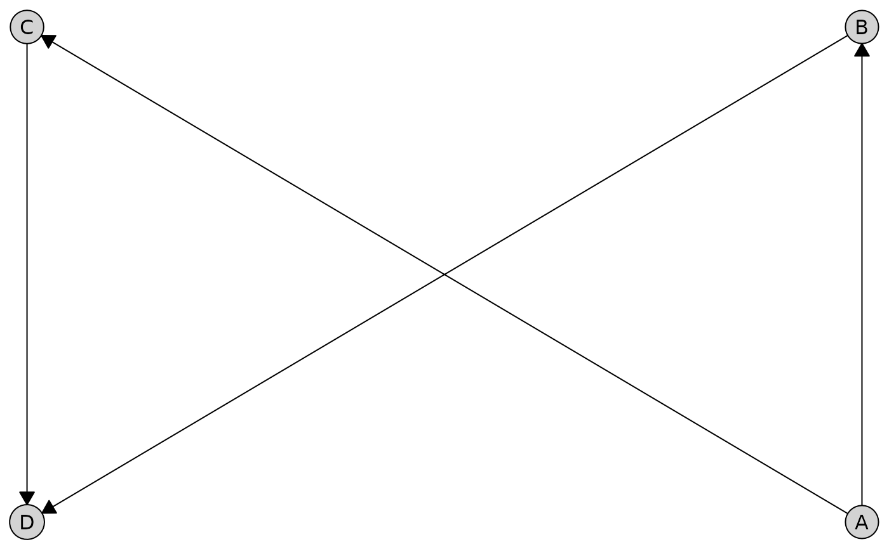
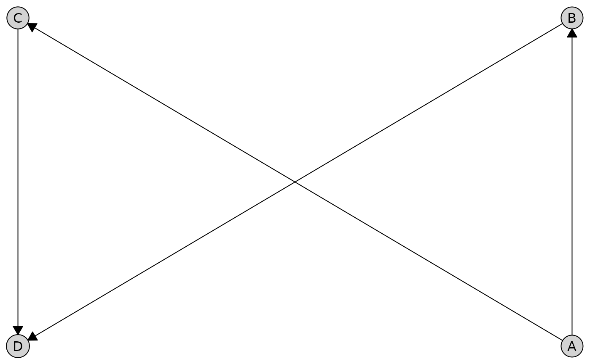
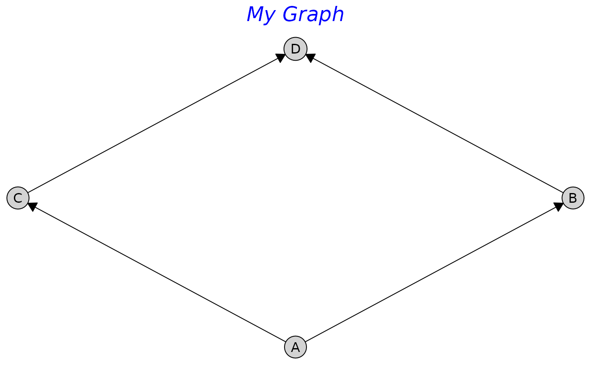
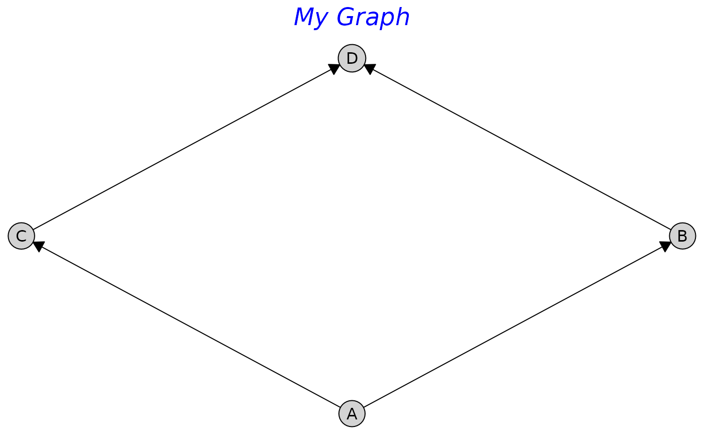

Creates a grid graphics object (gTree) representing a caugi graph.
If the graph has not been built yet, it will be built automatically before
plotting. This implementation uses idiomatic grid graphics with viewports
for proper coordinate handling.
Arguments
- x
A
caugiobject. Must contain only directed edges for Sugiyama layout.- layout
Specifies the graph layout method. Can be:
A character string:
"auto"(default),"sugiyama","fruchterman-reingold","kamada-kawai","bipartite". Seecaugi_layout()for details.A layout function: e.g.,
caugi_layout_sugiyama,caugi_layout_bipartite, etc. The function will be called withxand any additional arguments passed via....A pre-computed layout data.frame with columns
name,x, andy.
- ...
Additional arguments passed to
caugi_layout(). For bipartite layouts, includepartition(logical vector) andorientation("rows"or"columns").- node_style
List of node styling parameters. Supports:
Appearance (passed to
gpar()):fill,col,lwd,lty,alphaGeometry:
padding(text padding inside nodes in mm, default 2),size(node size multiplier, default 1)Local overrides via
by_node: a named list of nodes with their own style lists, e.g.by_node = list(A = list(fill = "red"), B = list(col = "blue"))
- edge_style
List of edge styling parameters. Can specify global options or per-type options via
directed,undirected,bidirected,partial. Supports:Appearance (passed to
gpar()):col,lwd,lty,alpha,fill.Geometry:
arrow_size(arrow length in mm, default 3),circle_size(radius of endpoint circles for partial edges in mm, default 1.5)Local overrides via
by_edge: a named list with:Node-wide styles: applied to all edges touching a node, e.g.
A = list(col = "red", lwd = 2)Specific edges: nested named lists for particular edges, e.g.
A = list(B = list(col = "blue", lwd = 4))
Multiple levels can be combined: Style precedence (highest to lowest): specific edge settings > node-wide settings > edge type settings > global settings.
- label_style
List of label styling parameters. Supports:
Appearance (passed to
gpar()):col,fontsize,fontface,fontfamily,cex
- tier_style
List of tier box styling parameters. Tier boxes are shown when
boxes = TRUEis set within this list. Supports:Appearance (passed to
gpar()):fill,col(border color),lwd,lty,alphaGeometry:
padding(padding around tier nodes as proportion of plot range, default 0.05)Labels:
labels(logical or character vector). IfTRUE, uses tier names fromtiersargument. If a character vector, uses custom labels (one per tier). IfFALSEorNULL(default), no labels are shown.Label styling:
label_style(list withcol,fontsize,fontface, etc.)Values can be scalars (applied to all tiers) or vectors (auto-expanded to each tier in order)
Local overrides via
by_tier: a named list (using tier names fromtiersargument) or indexed list for per-tier customization, e.g.by_tier = list(exposures = list(fill = "lightblue"), outcome = list(fill = "yellow"))orby_tier = list(1= list(fill = "lightblue"))
- main
Optional character string for plot title. If
NULL(default), no title is displayed.- title_style
List of title styling parameters. Supports:
Appearance (passed to
gpar()):col,fontsize,fontface,fontfamily,cex
- outer_margin
Grid unit specifying outer margin around the plot. Default is
grid::unit(2, "mm").- title_gap
Grid unit specifying gap between title and graph. Default is
grid::unit(1, "lines").
Value
A caugi_plot object that wraps a gTree for grid graphics
display. The plot is automatically drawn when printed or explicitly
plotted.
Examples
cg <- caugi(
A %-->% B + C,
B %-->% D,
C %-->% D,
class = "DAG"
)
plot(cg)
 # Use a specific layout method (as string)
plot(cg, layout = "kamada-kawai")
# Use a specific layout method (as string)
plot(cg, layout = "kamada-kawai")
 # Use a layout function
plot(cg, layout = caugi_layout_sugiyama)
# Use a layout function
plot(cg, layout = caugi_layout_sugiyama)
 # Pre-compute layout and use it
coords <- caugi_layout_fruchterman_reingold(cg)
plot(cg, layout = coords)

# Bipartite layout with a function
cg_bp <- caugi(A %-->% X, B %-->% X, C %-->% Y)
partition <- c(TRUE, TRUE, TRUE, FALSE, FALSE)
plot(cg_bp, layout = caugi_layout_bipartite, partition = partition)
# Pre-compute layout and use it
coords <- caugi_layout_fruchterman_reingold(cg)
plot(cg, layout = coords)

# Bipartite layout with a function
cg_bp <- caugi(A %-->% X, B %-->% X, C %-->% Y)
partition <- c(TRUE, TRUE, TRUE, FALSE, FALSE)
plot(cg_bp, layout = caugi_layout_bipartite, partition = partition)
 # Customize nodes
plot(cg, node_style = list(fill = "lightgreen", padding = 0.8))
# Customize nodes
plot(cg, node_style = list(fill = "lightgreen", padding = 0.8))
 # Customize edges by type
plot(
cg,
edge_style = list(
directed = list(col = "blue", arrow_size = 4),
undirected = list(col = "red")
)
)
# Customize edges by type
plot(
cg,
edge_style = list(
directed = list(col = "blue", arrow_size = 4),
undirected = list(col = "red")
)
)
 # Add a title
plot(cg, main = "Causal Graph")
# Add a title
plot(cg, main = "Causal Graph")
 # Customize title
plot(
cg,
main = "My Graph",
title_style = list(fontsize = 18, col = "blue", fontface = "italic")
)

# Customize title
plot(
cg,
main = "My Graph",
title_style = list(fontsize = 18, col = "blue", fontface = "italic")
)
